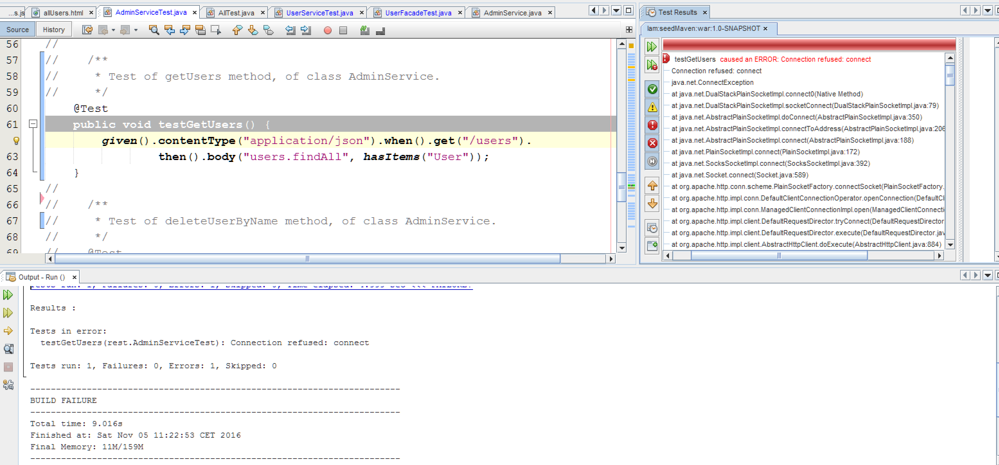
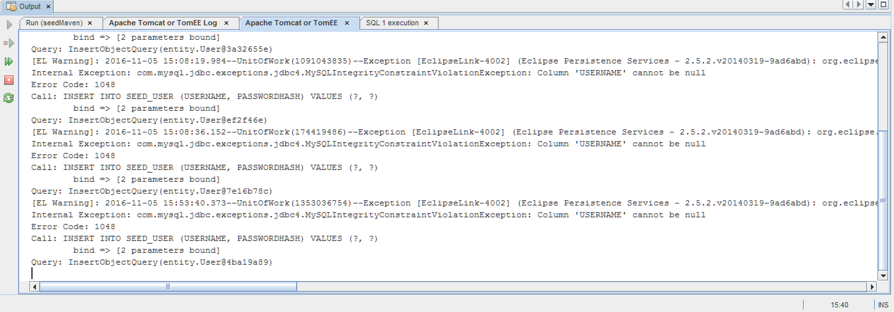
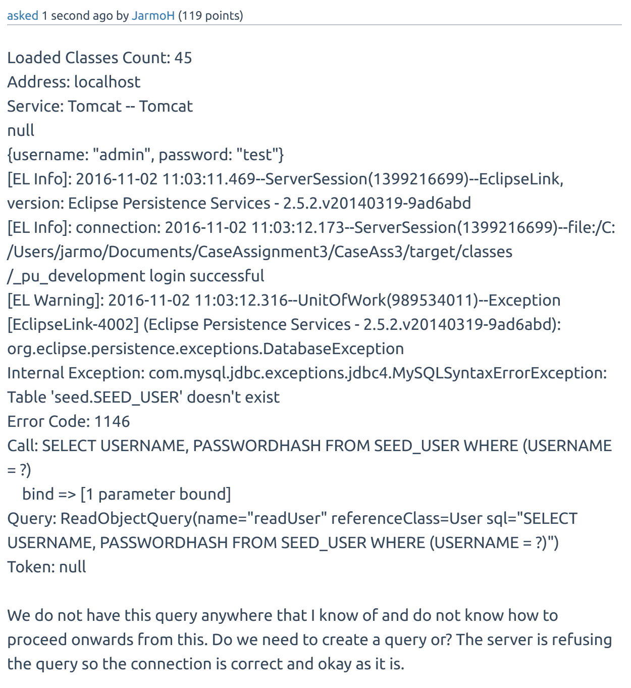
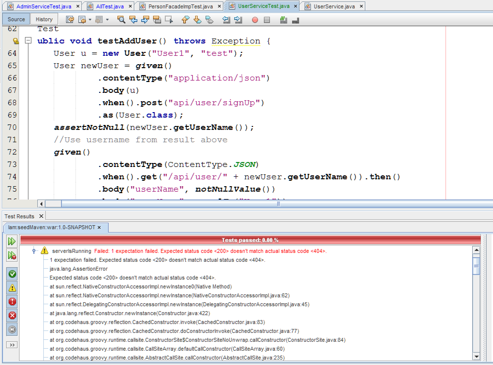

No support for (out-of-the-box) Client Side Testing with this version of the seed
The backend testing for this project is not much due to having very little
time to implement a lot of it due to other problems in the project
which prevented a lot of the required learning process to even know
the basics of the required testing. As it is most of the tests are commented
out. What testing was done yielded in errors and failures most of the time.
In the beginning all the tests passed since they were the seed-based ones
and during the development cycle most of the time if the tests passed
we simply forgot to make a note of it.



